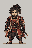
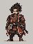
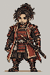
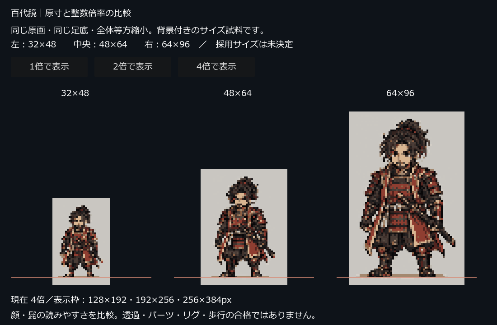

同じ原画の同じ範囲を、全体に同じ縦横倍率で縮小しています。背景付き・24色以内の比較試料です。正式なドットの手直し・透過・パーツ化はまだ行っていません。
合戦・内応交渉の画面で比較する →

最もコンパクト。眉・髭・顔型を区別する余地は少ない。群衆や遠景での用途を検討。

中間候補。顔と装備の読みやすさ、人数を同時表示する余地のバランスを比較。

細部を残しやすい。必要な手直し量と、ゲーム上での人物の占有面積も大きくなる。

4倍は画素の検査用で、マップ上の標準表示倍率として採用したものではありません。背景上での馴染み・人数密度は未検証です。
固定：原画ID、切り出し座標、全体の等方倍率、足底基準、24色の共通パレット、ディザなし、ゲーム内の最近傍補間、整数拡大。未決定：採用画素数、標準表示倍率、カメラ、同時表示人数、正式パレット色、意味マスク、動作の余白。
制作条件と検証記録／実際の設定と画像ハッシュ